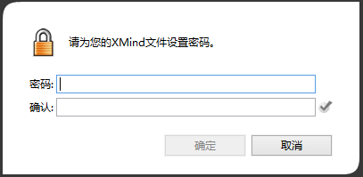
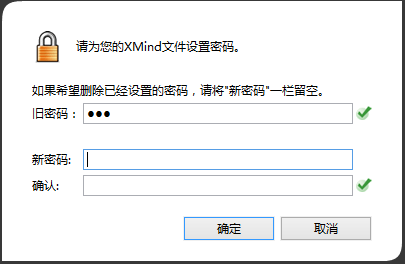

密码保护
文件安全问题素来是最重要的，无论是对于个人隐私还是商业秘密来说。XMind Pro支持文件加密功能。
设置密码:
- 打开或者新建一张思维图；
- 在菜单栏下选择“文件 - 密码保护”；
- 在接下来的对话框输入密码并点击“确认”按钮。

重置/移除密码:
- 输入密码打开您设置密码保护的思维图；
- 在菜单栏下选择“文件 - 密码保护”；
- 输入旧密码后您有以下两个选项:
- 移除旧密码: “新密码”栏留空并点击“确认”
- 重置密码: 输入新密码

注意: 请记住您的密码。若您遗失密码，文件将不能再次打开。
您可能还对下列内容感兴趣:
帮助中心